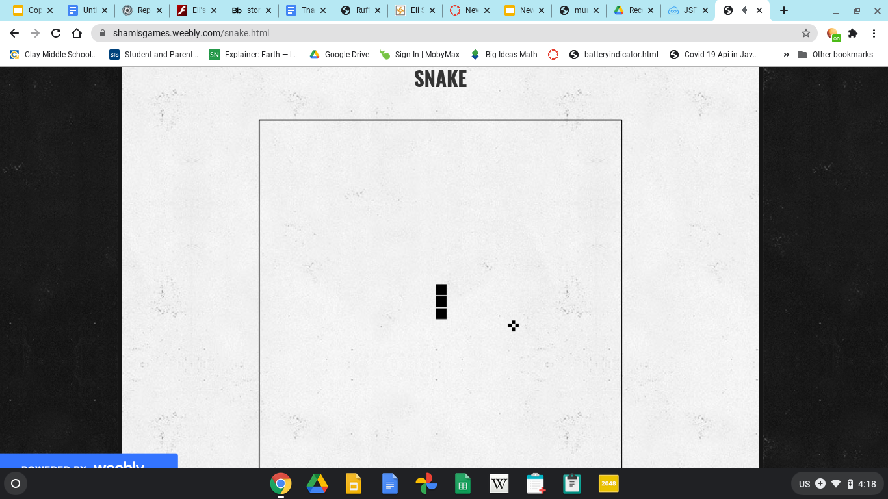
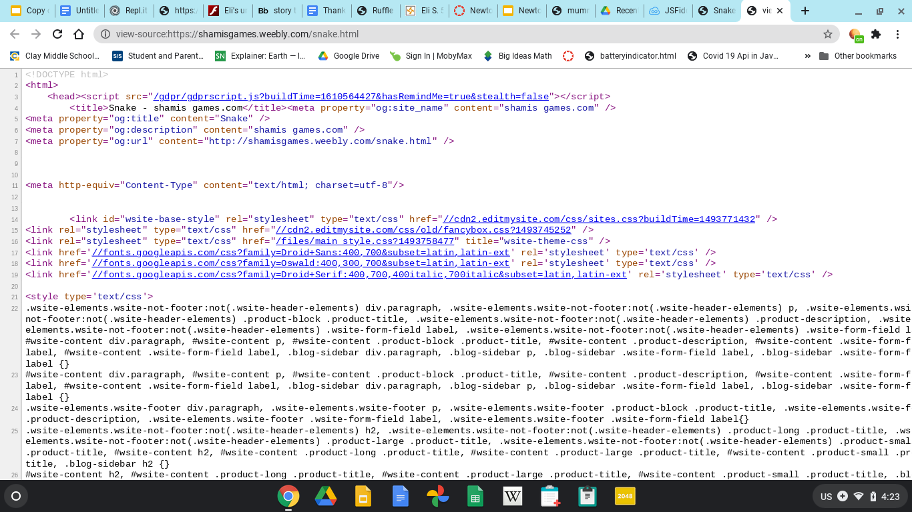
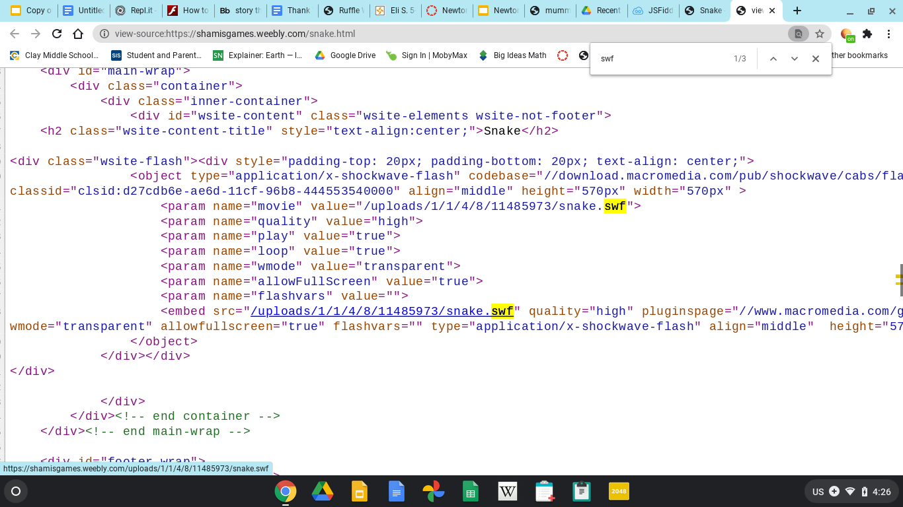
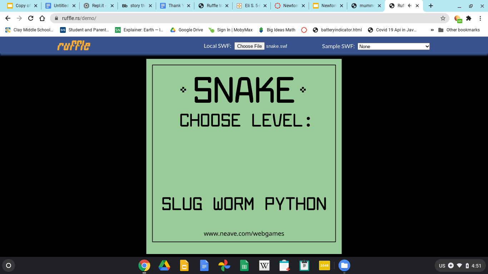

As you probably know, flash games are gonna go away soon. That means you will not be able to run flash anymore. Fortunately, there is a way to still play these games after flash dies. Here's how.
1. Go to the website with your flash game

2. Press "ctrl" and "u" at the same time.

3.Then press "ctrl" and "f" at the same time and search "swf"
4.click on the link

6.Then click the button that says "choose file"
then goto the recent folder. The game you downloaded should be on top.
7.Play your game!

Encountering issues with ruffle? That may because the game you are trying to upload using actionscript3, which is not supported by ruffle.